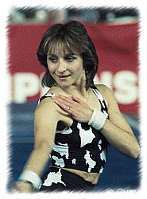

Diana Dudeva (BUL)
1987 European AA Bronze Medalist
1988
Olympic FX Bronze Medalist
|

Medal Total
- Olympic Games: 1 Bronze
- European Championships: 1
Silver, 1 Bronze
|
Diana was born on July 7, 1968
in Pleven. She began gymnastics at age 9, with coach Margarita Tomova at DFS Spartak. She later was coached by Ivan Kondev at ZSKA Sofia. Her floor exercise bronze medal at the 1988 Olympics was the first Olympic medal won by a Bulgarian female gymnast. She retired
from competitive gymnastics after the 1988 Olympics and married fellow gymnast
Plamen Petkov. The couple live in Greece, where they coach. They
have two children, a daughter, Radina, and a son, Daniel.
Competition Results
- 1980
- Jr. POL-BUL Dual Meet: 6th AA
-
- 1981
- Cottbus International: 16th AA
- Jr. Balkan Championships: 10th AA, 2nd FX
- Jr. GDR-BUL Dual Meet: 2nd AA
-
- 1982
- Jr. European Championships: 20th AA
Leverkusen Cup: 1st AA
SKDA Championships: 1st Team, 6th AA, 3rd UB
-
- 1983
- Balkan Championships: 6th AA, 3rd B, 3rd FX
Blume Memorial: 6th AA
- World Championships: 4th Team, 34th AA (prelims)
-
- 1984
- Beijing International: 3rd AA
Blume Memorial: 10th AA
-
- 1985
- Balkan Championships: 2nd AA, 1st B, 2nd UB, 6th FX
- BUL Nationals: 1st AA
- Cottbus International: 5th AA, 3rd UB, 3rd FX,
4th V, 5th B
- European Championships: 7th AA, 6th V, 6th UB, 8th B
- French International: 3rd FX
- Golden Sands: 2nd AA, 1st V, 1st FX
- Kraft International: 8th AA
- Leverkusen Cup: 1st AA
- Pre-World Championships: 1st AA, 1st V, 1st B, 1st FX,
2nd UB
- World Championships (Montreal): 4th Team, 24th AA, 8th
UB
-
- 1986
- Ahoy Cup: 8th AA, 4th B, 5th UB, 8th V
Balkan Championships: 13th AA
- Champions All: 3rd AA
- Chunichi Cup: 17th AA, 7th FX
- FRG-BUL Dual Meet: 3rd AA
French International: 3dr FX
- Golden Sands: 2nd AA, 2nd UB, 2nd FX, 3rd V
- Goodwill Games: 10th AA, 3rd B, 7th FX
- Kraft International: 5th AA, 2nd B
NED-BUL Dual Meet: 1st Team, 2nd AA
Tokyo Cup: 4th B, 6th FX
-
- 1987
- Athens International: 1st AA, 1st B, 1st FX, 2nd V
- Belgian Gym Masters: 1st AA, 1st B, 2nd UB
- Blume Memorial: 1st AA, 1st UB, 1st FX
BUL Championships: 1st AA, 2nd UB
- European Championships: 3rd AA, 2nd UB,
5th V
- Medeco Cup: 2nd AA, 1st FX, 2nd V, 3rd B
- World Championships (Rotterdam): 5th Team, 9th AA, 6th
B
-
- 1988
- American Cup:
- European Cup: 8th AA, 3rd FX, 4th V
- French International: 5th AA
Golden Sands International: 3rd AA
- International Mixed Pairs: 7th AA
- Olympic Games: 5th Team, 9th AA, 3rd FX,
6th B
-
- 1991
- World Professional Championships: 4th B, 5th FX
-
This page was created on January 23, 1999 and was last
updated on May 11, 2026.
© Gymn
Forum